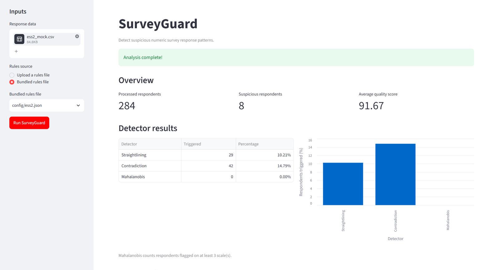
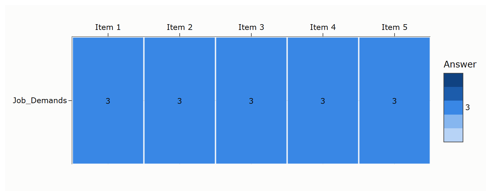
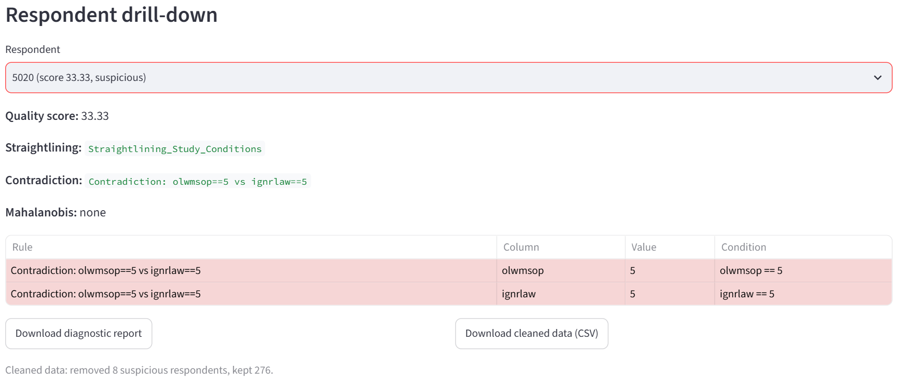

1 · For whom, and why
SurveyGuard
For social science students who must clean a survey before the analysis.
Why: some respondents click without reading, and nobody checks 1,498 rows by eye.
ParliamentLegal systemPolicePoliticiansPartiesEU Parliament
1017
1023
1031
1044
↑ didn't read
1052
1068
1071
Free · runs on your own computer · ESS rounds 1–11 ready to use
2 · The demo
Upload, run, see why.
- 1Upload, pick the ESS rules, Run: 8 of 284 suspicious.
- 2Three detectors, each counted.
- 3Each one shows its evidence:
a Same answer everywhere: heatmap
b Answers that can't both be true: rules
c Unlike everyone else: map
- 4Flagged, with reasons. Then download the report and the cleaned file.

Real SurveyGuard screen · synthetic sample
 Real SurveyGuard screen · synthetic sample · one flag alone is a warning, not a verdict
Real SurveyGuard screen · synthetic sample · one flag alone is a warning, not a verdict

a · Straightlining heatmap: 3 to all five Job Demands questions, zero variation
| Rule | Answers | |
|---|
| Politicaltrust_politicians > 8 ∧ trust_parliament < 2 | trust_politicians = 10
trust_parliament = 0 | bundled ESS rule |
| Age vs. birth yearage ≤ 30 ∧ birth_year ≤ 1969 | age = 25
birth_year = 1950 | bundled ESS rule |
| Demographiceducation = PhD ∧ age < 18 | education = PhD
age = 8 | example ·
not built yet |
b · Contradiction rules: two answers that can't both be true · made-up answers · the first two rules ship today
 c · Mahalanobis PCA map of one scale: red dots are outliers on it; the flag counts only on 3 or more scales
c · Mahalanobis PCA map of one scale: red dots are outliers on it; the flag counts only on 3 or more scales

Real SurveyGuard screen · synthetic sample · the rule table between them left out
On the real Hungarian ESS 2005 file: 1,498 respondents → 10 suspicious, 8.4 s. Screens: tests/fixtures/ess2_mock.csv, no real respondent data.
3 · Why it works
390 tests passed. I still found the bugs.
agent 390 tests ✓ passed
me the app, on real data:
- 1Axis numbers cut off
- 2
> 8 shown as | 8
- 3A few suspicious next to 1,500: invisible
- 4Points stacked on the map
✗ Before
✓ After
1 · Real ESS9 check: numbers and titles clipped on the histogram and the map · fix: room around every axis · redrawn sketch
✗ Before
| Column | Value | Condition |
|---|
| trstprt | 9 | 8 |
✓ After
| Column | Value | Condition |
|---|
| trstprt | 9 | trstprt > 8 |
2 · Real ESS9 check: the drill-down read “> 8” as a quote mark and dropped the “>” · fix: the whole condition in the cell · redrawn sketch
✗ Before · linear axis
✓ After · log axis
3 · Real ESS9, then ESS8: 3 suspicious (red) next to 1,446 · fix: counts on the bars, then a log axis · the real ESS8 bins, redrawn
✗ Before
✓ After
4 · Real ESS9 check: identical answers drew on top of each other · fix: a small random offset, exact values on hover · redrawn sketch, offset enlarged
Tests by the agent, browser checks by me on the real ESS9 and ESS8 files, 3 November 2026 · after the fixes: 405 tests and my OK · PLANNING_LOG.md.
4 · What I learned
Same answer, 47 times faster.
The same 1,498-respondent file, from Run to result:
Before397 s6.5 minutes
After8.4 s
Speed means nothing if the answer changes. So the old, slow version stayed in the tests as the referee: the new one must give exactly the same output.
Same file, same machine, same result: 1,498 · 10 · 96.22. Speed-up on 25 October, measured again on 8 November 2026, PLANNING_LOG.md.
5 · What's next
Not only ESS.
A plan, not built yet
Rules for other surveys.A rules file for another questionnaire, for example ISSP or your own thesis survey.
A rules editor in the app.Pick the scales and the contradictions on screen, without writing JSON by hand.
Check it on real data first.As with ESS: measure the cut-offs on the new survey before trusting them.
SurveyGuard
Writing a thesis on survey data? Try it on yours.
esst-prog2.github.io/surveyguard
Free · runs on your own computer · ESS rounds 1–11